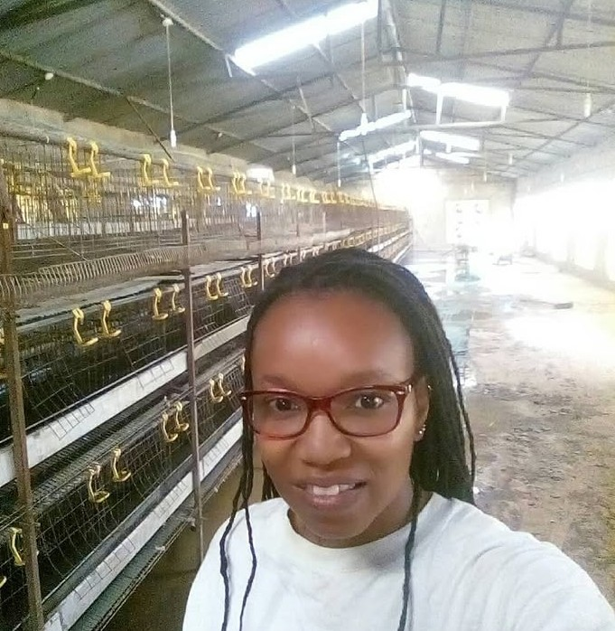
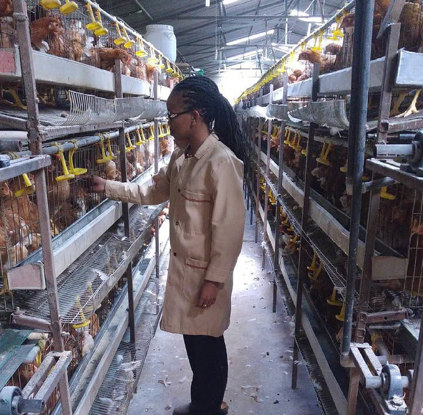

A poultry house may look very different from a microbiology laboratory, but the principles are surprisingly similar: understand the biology, control the environment, and prevent problems before they begin.

At Alan Keegan Farm, I had the opportunity to apply my microbiology background within a 2,500-layer poultry enterprise. Hygiene was one of the foundations of this work.
Preparing the house for a new flock involved much more than clearing the cages. Cleaning and disinfection extended across the production environment, including water tanks, drinkers, conveyor belts, cages and other equipment where contamination could potentially occur.
Once the flock was in place, maintaining good hygiene and biosecurity remained an everyday consideration. I was also interested in the other side of microbial management — how beneficial microorganisms could potentially support production.

This led to the introduction and evaluation of prebiotic and probiotic approaches, while monitoring flock performance, feed efficiency and egg quality.
The experience reinforced something I continue to value in my work: microbiology is not confined to the laboratory. It can help us understand and improve the environments in which food is produced, from controlling unwanted microorganisms to exploring beneficial ones.
For me, the poultry house became a practical laboratory — one where microbiology, animal production and sustainability came together.